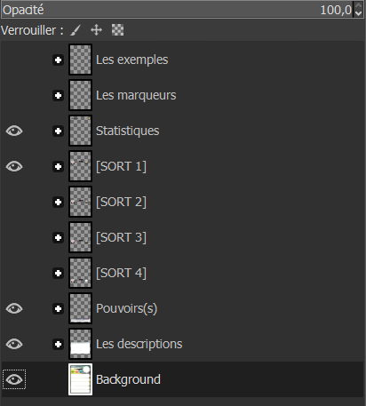

Présentation
C'est bon c'est ouvert ? Normalement, vous devriez avoir un peu près la même chose que moi :
Avec les nouvelles mise à jour, la configuration peut changer l'important, c'est d'avoir la partie "Calques" sur la droite
Intéressons-nous d'ailleurs à la partie des Calques
1 - Les calques

Ici, toute la carte Krosmaster est représenter couche par couche (calque par calque) dans une arborescence,
vous pouvez appuyez sur le "+" pour ouvrir le dossier de calque correspondant.
Par exemple, si vous ouvrez le dossier de calque "Statistiques" vous trouverez la liste de tous les statistiques qui compose votre carte.
Statistiques que vous pourrez modifier un peu plus tard, nous y reviendrons. Conseil N°2
2 - Outils
Sur votre gauche, vous pouvez voir vos outils que vous pouvez utiliser pour modifier vos images.
En haut les îcones que vous pouvez sélectionner pour utiliser l'outil correspondant, en bas les options de l'outils (entre autres).
Vous apprendrez vous-même à les utiliser, les deux plus importants pour modifier les cartes Krosmaster sont évidemment :
l'Outil de déplacement, l'Outil de texte et l'Outil de mise à échelle.
3 - Barre de raccourci
J'espère ne rien vous apprendre sur ce qu'est qu'une barre de raccourci...
Nous, on va surtout utiliser la case "Fichier" pour exporter notre carte et "Filtres" pour y ajouter des effets sympathiques comme l'ombrage.